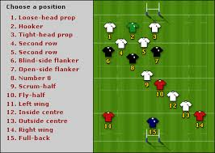
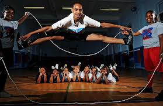

this the way people do something for a certain goal
in sports there many things you can do
and we are going to see them one by one starting with:
soccer is the way people are allinged to go to the opponents goal to win some points. but in some situations there are draws and losses. in soccer you cannot expect to always win in soccer there are 11 players and those 11 players make a plan and that plan is called a formation and a game plan.

In soccer people get better by practice. kids cannot play on a real pitch with realplayers they practice at academies

for those of you who want to join the academy above [TSA] contact 0705199475 [ watsapp] /0773400546 /thesocceracademyblog.wordpress.com
when playing soccer you need to wear special attire like a jersey


in soccer people play on a pitch because there cant play on concrete

in soccer with out a formations it is like people ruunning on a pitch with a ball trying to score. and you cant just play any team you find . that is why we have leagues like
in different leagues there are different soccer balls
rugby is a type of football developed at rugby school in rugby,warwickshire.

as we all know this is a type of football where people hold the ball which look like this
i wont talk much about rugby i will about two things formation and the pitch
in formation i just want to say it is like soccer. just there are 15 players put in different positions.
in the pitch it is players trying to go to the opponents goal to score

hockey is not like soccer or rugby
in hockey people play with pucks
i think every sport has a formation and this is the formation of hockey

in jump rope there are many types like normal skipping,double dutch
basically in double dutch there are two ropes with two people on each side turning the ropes in the middle you can put as many people as you want but preferably at most three. here is a picture of people doing double dutch
in frisbee the objection of the game is to catch the disc before it reaches the opponent
do you know the best thing about frisbee is? if you dont know let me tell you it is a dog can play frisbee. isnt that cool
cricket is a bat and ball game played on a 22 yard long pitch with a wicket. on each side
a wicket is a set of three wooden stumps.

the origin of cricket is unknown. in cricket the first game was in east england
in cricket they have special attire like boots, jerseys
in cricket there are eleven players on each team
here i have the best cricketer in the world
Baseball is a bat-and-ball game played between two teams of nine players each, who take turns batting and fielding. The batting team attempts to score runs by hitting a ball that is thrown by the pitcher with a bat swung by the batter, then running counter-clockwise around a series of four bases: first, second, third, and home plate. A run is scored when a player advances around the bases and returns to home plate. Players on the batting team take turns hitting against the pitcher of the fielding team, which tries to prevent runs by getting hitters out in any of several ways. A player on the batting team who reaches a base safely can later attempt to advance to subsequent bases during teammates' turns batting, such as on a hit or by other means. The teams switch between batting and fielding whenever the fielding team records three outs. One turn batting for both teams, beginning with the visiting team, constitutes an inning. A game is composed of nine innings, and the team with the greater number of runs at the end of the game wins. Baseball has no game clock, although almost all games end in the ninth inning. Baseball evolved from older bat-and-ball games already being played in England by the mid-18th century. This game was brought by immigrants to North America, where the modern version developed. By the late 19th century, baseball was widely recognized as the national sport of the United States. Baseball is currently popular in North America and parts of Central and South America, the Caribbean, and East Asia, particularly Japan.
here is a of my favourite team
Basketball is a non-contact team sport played on a rectangular court by two teams of five players each. The objective is to shoot a ball through a hoop 18 inches (46 cm) in diameter and 10 feet (3.048 m) high that is mounted to a backboard at each end of the court. The game was invented in 1891 by Dr. James Naismith, who would be the first basketball coach of the Kansas Jayhawks, one of the most successful programs in the game's history. A team can score a field goal by shooting the ball through the basket being defended by the opposition team during regular play. A field goal scores three points for the shooting team if the player shoots from behind the three-point line, and two points if shot from in front of the line. A team can also score via free throws, which are worth one point, after the other team is assessed with certain fouls. The team with the most points at the end of the game wins, but additional time (overtime) is mandated when the score is tied at the end of regulation. The ball can be advanced on the court by passing it to a teammate, or by bouncing it while walking or running (dribbling). It is a violation to lift, or drag, one's pivot foot without dribbling the ball, to carry it, or to hold the ball with both hands then resume dribbling. The game has many individual techniques for displaying skill—ball-handling, shooting, passing, dribbling, dunking, shot-blocking, and rebounding. Basketball teams generally have player positions, the tallest and strongest members of a team are called a center or power forward, while slightly shorter and more agile players are called small forward, and the shortest players or those who possess the best ball handling skills are called a point guard or shooting guard. The point guard directs the on court action of the team, implementing the coach's game plan, and managing the execution of offensive and defensive plays (player positioning). Basketball is one of the world's most popular and widely viewed sports.The National Basketball Association (NBA) is the most popular and widely considered to be the highest level of professional basketball in the world and NBA players are the world's best paid athletes by average annual salary per player. Outside North America, the top clubs from national leagues qualify to continental championships such as the Euroleague and FIBA Americas League. The FIBA Basketball World Cup attracts the top national teams from around the world. Each continent hosts regional competitions for national teams, like EuroBasket and FIBA Americas Championship. The FIBA Women's Basketball World Cup features the top national women's basketball teams from continental championships. The main North American league is the WNBA, whereas the EuroLeague Women has been dominated by teams from the Russian Women's Basketball Premier League
In early December 1891, Canadian Dr. James Naismith, a physical education professor and instructor at the International Young Men's Christian Association Training School (YMCA) (today, Springfield College) in Springfield, Massachusetts was trying to keep his gym class active on a rainy day. He sought a vigorous indoor game to keep his students occupied and at proper levels of fitness during the long New England winters. After rejecting other ideas as either too rough or poorly suited to walled-in gymnasiums, he wrote the basic rules and nailed a peach basket onto a 10-foot (3.0 m) elevated track. In contrast with modern basketball nets, this peach basket retained its bottom, and balls had to be retrieved manually after each "basket" or point scored; this proved inefficient, however, so the bottom of the basket was removed, allowing the balls to be poked out with a long dowel each time. Basketball was originally played with a soccer ball. These round balls from "association football" were made, at the time, with a set of laces to close off the hole needed for inserting the inflatable bladder after the other sewn-together segments of the ball's cover had been flipped outside-in. These laces could cause bounce passes and dribbling to be unpredictable. Eventually a lace-free ball construction method was invented, and this change to the game was endorsed by Naismith. (Whereas in American football, the lace construction proved to be advantageous for gripping and remains to this day.) The first balls made specifically for basketball were brown, and it was only in the late 1950s that Tony Hinkle, searching for a ball that would be more visible to players and spectators alike, introduced the orange ball that is now in common use. Dribbling was not part of the original game except for the "bounce pass" to teammates. Passing the ball was the primary means of ball movement. Dribbling was eventually introduced but limited by the asymmetric shape of early balls. Dribbling only became a major part of the game around the 1950s[citation needed], as manufacturing improved the ball shape. The peach baskets were used until 1906 when they were finally replaced by metal hoops with backboards. A further change was soon made, so the ball merely passed through. Whenever a person got the ball in the basket, his team would gain a point. Whichever team got the most points won the game. The baskets were originally nailed to the mezzanine balcony of the playing court, but this proved impractical when spectators in the balcony began to interfere with shots. The backboard was introduced to prevent this interference; it had the additional effect of allowing rebound shots. Naismith's handwritten diaries, discovered by his granddaughter in early 2006, indicate that he was nervous about the new game he had invented, which incorporated rules from a children's game called "Duck on a Rock", as many had failed before it. Frank Mahan, one of the players from the original first game, approached Naismith after the Christmas break, in early 1892, asking him what he intended to call his new game. Naismith replied that he hadn't thought of it because he had been focused on just getting the game started. Mahan suggested that it be called "Naismith ball", at which he laughed, saying that a name like that would kill any game. Mahan then said, "Why not call it basketball?" Naismith replied, "We have a basket and a ball, and it seems to me that would be a good name for it."[12][13] The first official game was played in the YMCA gymnasium in Albany, New York, on January 20, 1892, with nine players. The game ended at 1–0; the shot was made from 25 feet (7.6 m), on a court just half the size of a present-day Streetball or National Basketball Association (NBA) court. At the time, football was being played with 10 to a team (which was increased to 11). When winter weather got too icy to play football, teams were taken indoors, and it was convenient to have them split in half and play basketball with five on each side. By 1897–1898 teams of five became standard.
here is is a pic of one of the best nba players and some logos